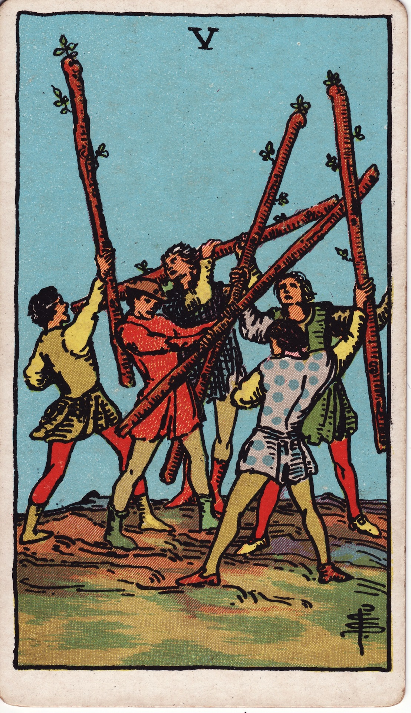
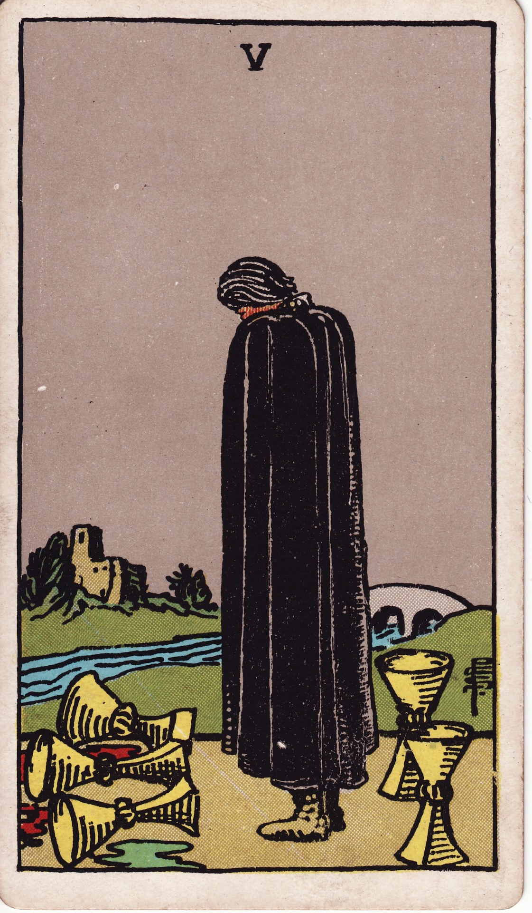
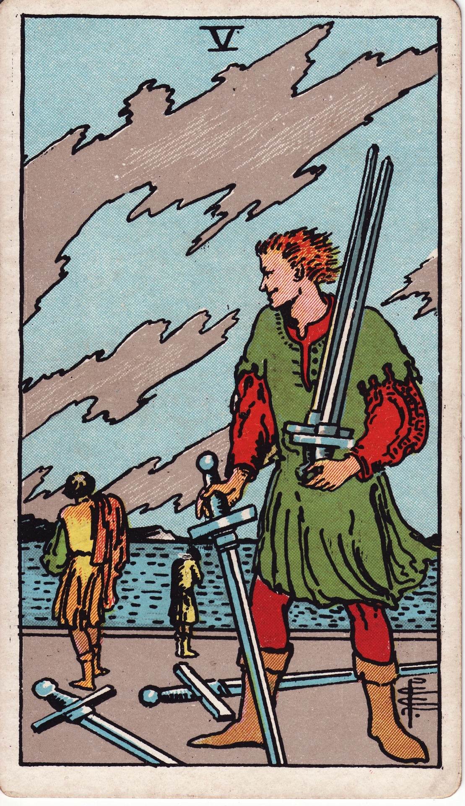
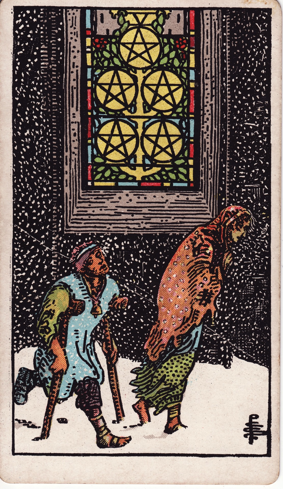

Lesson 04 · Tarot
The suit gave you the subject, and the number now gives you the chapter. Every suit runs the same ten-stage story from seed to full harvest, which means forty cards can be read from two facts you already half-know.
By the end of this page you can pick up a number card you have never studied, say which stage of which story it shows, and have the picture on the card back you up. That is a defensible first sentence for the forty number cards, earned from one small table — plus an honest account of where the table stops and the picture takes over.
Lesson 3 ended with half a skill: the suit names which of four conversations a card belongs to, but it says nothing about where in the conversation you are. The number carries that second half, because the sequence from Ace to Ten works like a story arc that every suit tells about its own subject: it opens at the Ace, runs into trouble around the Five, and ends at the Ten. Multiply four subjects by ten stages and you have the whole minor deck below the courts, no memorised card list required.
Read the table once now, and again with cards on the table in the practice section. The chapter names are the order's own words for the numbers, lifted from Book T and its study papers, and each number stands on one of the ten Sephiroth of the Tree of Life — the callouts below say which document supplied what. The quoted column is the manuscript's own meaning for each number; only the right-hand column is my plain-English gloss, and you can now check it against the source row by row.
| Card | Sephira | Chapter | The manuscript says | What happens at this stage |
|---|---|---|---|---|
| Ace | Kether · Crown | The root | "the Roots of the Powers of their element" | The suit's raw material arrives — pure potential, nothing done with it yet. |
| 2 | Chokmah · Wisdom | Initiation | "unites the Forces of the Positive and Negative … a beginning or Initiation" | A second party or option enters; balance, exchange, a first commitment. |
| 3 | Binah · Understanding | The resultant | "produces the Prince. The Resultant of that union. A spiritual card." | The pairing produces something visible — early growth, still unfinished. |
| 4 | Chesed · Mercy | Realization | "the Realization making the matter fixed or settled. Often taken as a new beginning." | What was built settles and becomes fixed — secure for now, and often the base of a new start. |
| 5 | Geburah · Severity | Opposition | "denotes Opposition"; its study note adds "opposition, strife … severity" | The mid-story crisis, and each suit breaks in its own way — see the evidence below. |
| 6 | Tiphareth · Beauty | Accomplishment | "the Perfection of Parts … taken to imply Accomplishment" | Help, reward, or movement out of the trouble; the sweetest cards in each suit. |
| 7 | Netzach · Victory | A possible result | "a possible result to be obtained by skill and courage" | The six's success put back in question — within reach but not secured, still to be won or lost. |
| 8 | Hod · Splendour | Solitary success | "material success, but sterile – not heading further. Solitary successes." | Success gained but not carried further — won for now, and stalled there. |
| 9 | Yesod · Foundation | Fundamental force | "like the horizon. All other numbers are bounded by it … Fundamental Force" | The suit's force at its peak and still in someone's hands — the last stage with a move left to make, for good or for ill. |
| 10 | Malkuth · Kingdom | Completed force | "Completed Force … fixed and completed force. Power exercised in material things only." | The story fully told, the matter settled — no move left, only the outcome, delivered or paid for. |
The system behind this table is Kabbalistic. Book T classifies the small cards "under the Nine Sephirah below Kether", one Tree of Life per suit, with each Ace — "the Root of the Powers" of its element — standing at Kether, the crown of the tree (full text, HTML mirror); that document is the source of the Ace's chapter name. Chapters 2–10 come from the Golden Dawn study manuscript published by Mary Greer, which both states the method — the meanings "are arrived at by combining the meanings of the numbers, with the meanings of the suits" — and supplies the words: Initiation, Opposition, Accomplishment and the rest are its own terms for the numbers, with seven glossed as "a possible result to be obtained by skill and courage" (Sub Spe manuscript, annotated by Greer — lesson 3's assigned reading). The one-word glosses on the Sephiroth names follow the renderings usual in Golden Dawn writing (Jewish sources translate a few differently — Chesed is as often "loving-kindness"). Only the "story arc" framing and the right-hand column are my modern teaching distillation.
For the game, a Seven simply beat a Six — four centuries of players attached no meaning to the numbers beyond rank, which is again Dummett's finding. And on nearly every pack before 1909 these forty cards were pips in the strict sense from lesson 2: seven cups meant a picture of seven cups. The stages in the table and the scenes on your cards are both later inventions, stacked one on the other.
You can check this claim against the order's own documents. Book T gives every number card a title, and when you read the titles across a single number, the shared stage shows through the four different subjects: the fives hit the low point, the sixes recover from it, and the tens close each story with a different ending.
| No. | Wands | Cups | Swords | Pentacles |
|---|---|---|---|---|
| 5 | Strife | Loss in Pleasure | Defeat | Material Trouble |
| 6 | Victory | Pleasure | Earned Success | Material Success |
| 10 | Oppression | Perfected Success | Ruin | Wealth |
Each entry is Book T's "Lord of …" title with the honorific trimmed. The tens row also shows that number alone does not fix the mood: completion makes Cups and Pentacles their happiest cards, while completed Swords and Wands turn into Ruin and Oppression. The stage is constant, and whether it counts as good news depends on what has been completed.




The arc's two closing chapters sit closest together, and they are worth separating once, properly. Book T draws the line in its general notes on the rows: the nines "rest on a firm basis" and carry "executive power" — the suit's force at its peak but still in someone's hands, with one move left to make — while the tens show "fixed culminated completed Force … the matter thoroughly and definitely determined", which leaves no move at all, only the outcome. Smith's pictures keep the same distinction. This next observation is mine rather than doctrine, so test it on your own cards: every nine shows one figure alone with the suit's full accumulation, still able to act — the bandaged guard between attacks, the feaster at his shelf of cups, the sleeper sitting up from the nightmare, the lady in her walled garden. In every ten the acting is over and the result has landed in a wider world: a town receives the load, a family stands under the rainbow of cups, dawn breaks behind the fallen figure, three generations share the coins. At the table, a nine asks whether you can hold what has built up; a ten reports what it finally came to.
Let's run the formula in full on a card you have not studied. Take the Six of Swords and reason it out before you ever see the picture. Six is the accomplishment chapter, the stage where the five's opposition starts to ease, and Swords is the suit of the mind, so the prediction is a mind coming out of a hard stretch, feeling something closer to relief than to joy. Book T titles the card Earned Success and glosses it as "success after anxiety and trouble." Now pull the card from your deck. Smith painted a ferryman poling two hunched passengers across water toward a calmer far shore, with the swords they are carrying planted upright in the boat — the trouble travels with them, but they are moving away from where it happened. Number and suit predicted a picture you had never looked at.
The evidence table above worked so well partly because I chose its rows. The sevens and the eights behave less neatly:
| No. | Wands | Cups | Swords | Pentacles |
|---|---|---|---|---|
| 7 | Valour | Illusionary Success | Unstable Effort | Success Unfulfilled |
| 8 | Swiftness | Abandoned Success | Shortened Force | Prudence |
All four sevens still describe "a possible result" — a success that is contingent, illusory, unstable or unfinished — but the family resemblance is fainter than in the fives, and in the eights it is fainter still: no plain reading of "solitary success" joins Swiftness to Prudence. The reason is a third input that the chapter table hides: every number card also carries one of the 36 decans of the zodiac, a planet in a sign, and the titles were written with that planet in view. Mars in Leo pushes the Seven of Wands toward Valour, the Moon in Aquarius pulls the Seven of Swords toward Unstable Effort, and one row down Mercury in Sagittarius turns the Eight of Wands into pure speed while Saturn in Pisces sinks the Eight of Cups into indolence and departure (Greer's annotated manuscript lists all three inputs per card). The chapter table averages thirty-six individual titles into nine chapter names, so it is reliable in rows where the four titles agree and rough in rows where the decans pulled them apart.
The Seven of Swords shows a second limit, and this one matters more. Formula and title agree the card should feel like an effort that will not quite hold — Book T glosses it as "partial success, yielding when victory is within grasp." What Smith painted is a man tiptoeing away from a camp with five swords bundled in his arms and two left planted behind him. Once you know to look, the stage is in the scene — he has most of the swords, not all of them, and no time to linger — but nobody meeting that picture cold says "unstable effort"; they say thief. A scene this specific carries information the number-times-suit arithmetic never produced, and it has its own ancestry, older than Book T and independent of it. Lesson 5 tells that story, and it ends in the rule you will actually read with: the number fixes the stage and the stakes, the picture owns the plot, and when they disagree the picture wins.
Fifteen minutes. You need only the forty number cards; courts and trumps sit out.
One attempt per question, no scrolling back up. Wrong answers teach more here than lucky ones.
You draw the Five of Pentacles, a card you have never studied. Number plus suit predicts…
Five is the opposition chapter and Pentacles is matter, so the card should show material life in crisis — and Smith duly painted two figures out in the snow. Book T titles it Material Trouble.
By the same reasoning, the Two of Cups should be about…
Two is the initiation chapter — the suit's first pairing — and Cups is feeling, which lands on a bond between two — Book T's title is simply Lord of Love. The toast among several friends is the Three, one chapter later.
According to the Golden Dawn's own study manuscript, minor-card meanings were…
The Sub Spe manuscript Greer published says the meanings "are arrived at by combining the meanings of the numbers, with the meanings of the suits" — a generative system, written down in the 1890s, not an inheritance.
Every suit's Six sits next to its Five as…
Strife turns to Victory, Defeat to Earned Success, Material Trouble to Material Success. The five-to-six turn is the clearest single piece of evidence that the numbers were built as one arc.
The Ten of Cups is a joyful card while the Ten of Swords is a disaster. What does that tell you about the number ten?
Both cards show a story fully told — completion is the constant. A suit of feeling completed is Perfected Success, while a suit of conflict and hard truth completed is Ruin — the stage comes from the number and the verdict from the subject.
Book T — the small cards section (canonical copy at hermetic.com). Skim all thirty-six titles and read the full descriptions for one suit of your choice, Ace to Ten. You now know the formula that wrote them, so reading the titles feels like checking a calculation — notice how often the number and the element are visibly doing the work inside each description.
I am your teacher here — ask me things. Anything that resisted the formula at the table, any title that seems to contradict its row. Some good ones to throw at me:
“Why is the Four of Cups sulky when four is supposed to be stability?” · “What are the Sephiroth actually, in one paragraph?” · “Which cards fit the arc worst, so I can learn them as exceptions?” · “Did Waite's book follow Book T's titles or quietly rewrite them?” · “Where do the courts fit, since they have no number?”